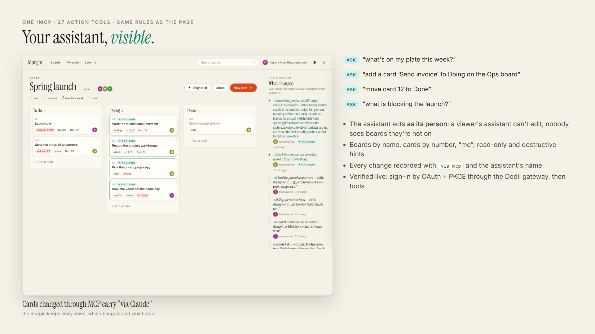
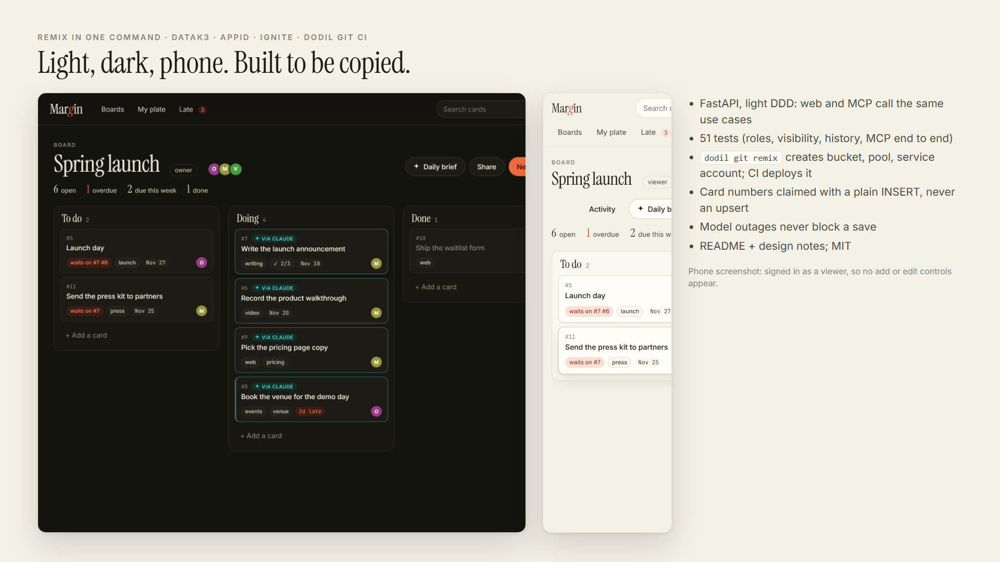
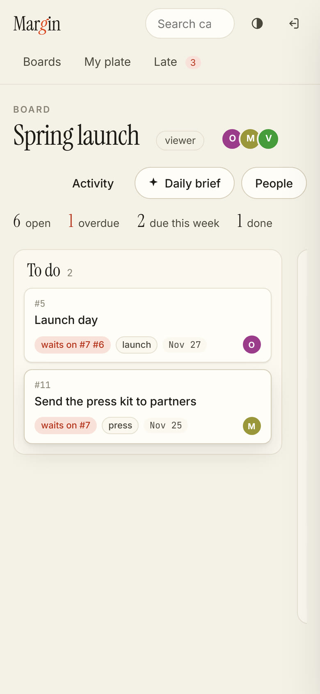

دراسة حالة · 2026
Margin: لوحة مهام للفريق يعمل عليها مساعدك الذكي.
Margin لوحة مهام للفريق تُستخدم من صفحة الويب أو مباشرة من Claude و ChatGPT عبر MCP. كل تغيير مسجّل: من قام به، ومتى، وما الذي تغيّر، وهل قام به الشخص نفسه أم مساعده.
- النوع
- تطبيق ويب متكامل، مع ربط بالمساعدات الذكية (MCP)
- الدور
- عمل فردي: المنتج والتصميم والواجهة الخلفية والواجهة الأمامية والاختبارات والنشر
- السنة
- 2026
- التقنيات
- Python 3.12, FastAPI, Postgres-compatible DB with vector search, OAuth, MCP, JavaScript, CI/CD

المشكلة
الفرق اليوم تسمح للمساعدات الذكية بالتعديل في أدوات العمل، لكن أغلب لوحات المهام لا تخبرك أي تغيير قام به شخص وأي تغيير قام به مساعده، وتعطي المساعد إما صلاحيات أكثر من اللازم أو لا تعطيه شيئًا.
الحل
Margin لوحة مهام للفريق تديرها من صفحة الويب أو مباشرة من Claude أو ChatGPT. اسأل «ما المطلوب مني هذا الأسبوع؟» أو قل «انقل البطاقة 12 إلى Done» أو «ما الذي يعطّل الإطلاق؟» فينفّذ المساعد ذلك باسمك، ولا يرى إلا لوحاتك.
كل تغيير يسجّل من قام به ومتى وما الذي تغيّر (القيمة القديمة والجديدة) ومن أي باب: صفحة الويب أو مساعد ذكي، مع اسم المساعد. وكل ما يفعله المساعد يظهر مباشرة على اللوحة: تنزلق البطاقة إلى مكانها وتتوهّج وتحمل علامة «via Claude».

المزايا
- أدوار الفريق: مالك وعضو ومشاهد. المالك وحده يدير الأشخاص، والمشاهد يقرأ فقط. اللوحات التي لست عضوًا فيها لا تظهر لك، لا على الويب ولا للمساعد.
- لوحات بثلاث قوائم To do / Doing / Done، وبطاقات فيها عنوان ووصف ومسؤول وتاريخ استحقاق وتصنيفات وقائمة مهام ورقم قصير. سحب وإفلات بالماوس أو القلم أو اللمس، والترتيب محفوظ.
- سجل كامل لكل بطاقة، وسجل نشاط للوحة.
- نقطة MCP واحدة فيها 27 أداة تنفيذ (نقل، إسناد، تعديل، تعطيل، بحث، تلخيص...)، فيعمل Claude و ChatGPT على اللوحة بإجراءات حقيقية، دون وصول مباشر إلى قاعدة البيانات.
- مزايا الذكاء الاصطناعي: تحويل بطاقة إلى قائمة مهام، وملخص يومي لكل لوحة، وبحث بالمعنى (سؤال «how do we get paid?» يجد بطاقة «Send invoice»)، و«بطاقات مشابهة» باستخدام vector embeddings.
- سلاسل «معطّلة بسبب» مع فحص الحلقات: سؤال «ما الذي يعطّل الإطلاق؟» يجيب عنه النظام حتى آخر السلسلة.
- تنبيه على المتأخر في كل مكان، و«بطاقاتي» مقسّمة إلى: متأخرة، هذا الأسبوع، لاحقًا.
- مظهر فاتح وداكن، وتصميم للهاتف، واختصارات لوحة المفاتيح، ودعم تقليل الحركة، وتحديثات مباشرة.

كيف بُني
- Python 3.12 و FastAPI بأسلوب Domain-Driven Design (domain / application / infrastructure). مسارات الويب وأدوات MCP تستدعي نفس الـ use cases، فكل قاعدة مكتوبة مرة واحدة وتسري على الاثنين.
- 51 اختبارًا آليًا تغطي قواعد الأدوار واللوحات.
- تسجيل دخول بـ OAuth مع PKCE و dynamic client registration، فيتصل Claude.ai و ChatGPT باسم الشخص المسجّل دخوله.
- قاعدة بيانات متوافقة مع Postgres فيها أعمدة
VECTOR(2048)وبحث عن أقرب جار بمقياس cosine، والـ embeddings والمحادثة من نماذج ذكاء اصطناعي مستضافة. - مسار CI يختبر ويبني وينشر مع كل push، وأمر واحد «remix» ينسخ التطبيق كله (الكود وقاعدة البيانات وتسجيل الدخول والنشر) إلى حساب أي شخص.
- واجهة أمامية بـ JavaScript و CSS فقط (بدون خطوة build)، بتصميم تحريري خاص بها: سحب مع رفع وميل، وحركة للبطاقات والإشعارات.
- ملف README وملاحظات التصميم داخل المستودع.

شاشات أخرى



تواصل معي
تحتاج نظامًا مثل هذا لمشروعك؟
اكتب لي في سطرين عمّا تريد أن تبنيه، بالعربية أو الإنجليزية.